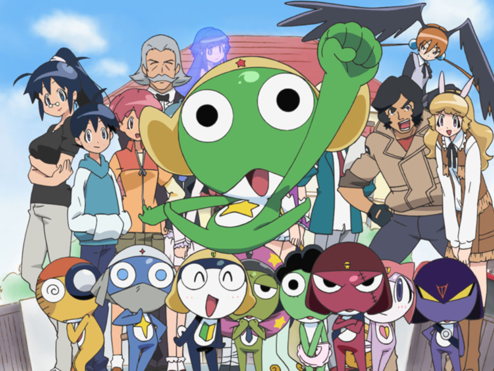

ケロロ軍曹
あらすじ
ガマ星雲第58番惑星「ケロン星」から地球の侵略のため、先遣隊が派遣された。
5名の兵士からなる、宇宙侵攻軍特殊先行工作部隊・ケロロ小隊が地球に降り立った。
しかし地球に降り立つ際に、隊員5名は散り散りになり、小隊長のケロロは一軒の
民家に潜伏するが、そこに住むペコポン（地球）人の日向夏美と弟の日向冬樹に
あっさりと発見・捕獲される。本隊はこの状況を危険と判断し、彼ら先発隊5名を
残して緊急撤退。地球に取り残されたケロロは、日向家の居候になり、家の掃除を
させられたり、趣味のガンプラを作ったりして毎日を送っている。
